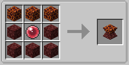
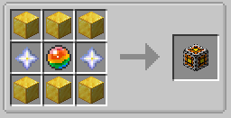
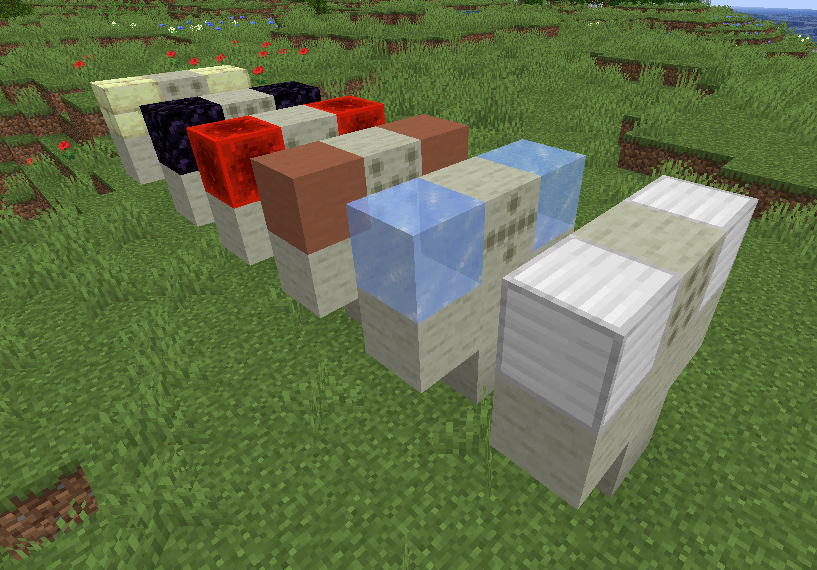
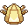
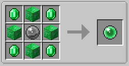

Legends and Quests¶
Introduction¶
The Pokécube has bases that complement each other, Legends is one of those bases. Pokécube Legends is the part that manages structures/dimensions and how legendary pokémob behave, both in spawn and capture. On this page you will find information about the structures of the legends, their spawn forms, decorative blocks, exclusive blocks of legends and extra information.
About dimensions, there is an exclusive page for it, you can see it by clicking here: Pokécube Dimensions
Exploration Structures¶
In this expansion, several structures were added, and in this part we’ll look at exploration structures. Exploitation structures are buildings that do not have links with legendary pokémob, they can be explored by players to get items or special trades.
Raids!¶
The Raids are here, and you can get strong pokémob and Gigantamax! Just find the Spots and start the battle!
Raid Block
Raid Structure
Raid Dynamax Pokémob
Informações (Mechanics/Itens/Moves)
Defeated pokémob drop Raid’s exclusive items, but if you catch them, those items will be in the pokémob inventory Items are random, mixing pokémob Loot Table with Raid items.
Itens¶
Wishing Piece: is the item you use to activate Raid. But don’t worry, Raids are reactivated after a while if you don’t get this item.
Gigant Shard: is the item you use to get Gigantamax! To use it, choose a pokémob that has Gigantamax and click on it with the item in hand !DO NOT PUT INTO THE INVENTORY!, if the item disappears from your hand it means that it worked, otherwise, check if the chosen pokémob has gigantamax. (Capturing pokémob in gigantamax form doesn’t need to use the item!)
Mints: This item can change your pokémob Nature, just use it in the same way as the Gigant Shard.
Z-Crystal: are the items that grant the Z-Move.
Catch Pokémob Raid¶
To capture the pokémob of the raid we need two factors:
1º - The pokémob needs to be extremely low on health!
2º - You need to use Dynamax Cube to capture!
To create a Dynamax Cube you use:
You can use any Poke Cube to create the Dynamax Cube!
Be aware that Dynamax Cube doesn’t use the capture chance of the Poke Cube you use in the Recipe, so if you use a Master Cube for the recipe, it will work like a normal Poke Cube!
> Currently, after capture, the Dynamax Cube will become a common Poke Cube, in the future it will be modified to return the Poke Cube used in the recipe!
Use (Dynamax/Gigantamx/Z-Move)¶
Dyna/G-Moves: To use the unique moves of these shapes, first you need to go to the Controls Menu and add a key in the pokécube area and then G/Z-Move. Once this is done, you need to be in an area that allows you to use Dynamax. Raids allow by default the use of Dynamax, as well as the gyms in village. But if you want to create a spot outside these places, just create the Max Spot block.
After everything is ready, just press the -M- button (remember that you need to be equipped with a mega evolution item: hat, ring, etc) and your pokémob becomes Dynamax. While your pokémob is in this form, press the previously configured key and the Moves will be changed to Dynamax Moves.
Z-Moves: Z-Moves increase the strength of a specific move of your pokémob. To use it, you need to equip z-move in pokémob and it needs to have a move corresponding to z-crystal (Z-Crystal Grass = Move Grass) With that in mind, just click the configured key and the move will become the Z-Move, but ATTENTION! the move can only be executed once, to execute it multiple times you need to collect your pokémob and throw it back into battle. Pokémob exclusive Z-Crystals are integrated with base Z-Crytals, the difference is that the specific pokémob needs to have the specific Move to use the exclusive Z-Move.
An example:
Pikachu with Thunderwave, if you use electric Z-move, it will use Gigavolt Havoc
Pikachu with Thunderbolt, if you use the electric Z-move, it will use 10,000,000 Volt Thunderbolt
Team’s Hideout¶
The hideouts are structures based on the villain teams from the Pokémon games, in the mod you can find three secret bases: Rocket, Magma and Aqua. The structures differ in their subterranean base, but have a similar top, which makes the structure more versatile when generated in the world.
The Bases only appear in the Biome: Plain
Base Entrance:

Team Rocket’s base has a look reminiscent of the Red/Blue games; At the end of the structure, you can battle Giovanni.
The Team Magma base looks similar to the Team Rocket base, but with alternate paths, you can battle Maxie.
The Team Aqua base looks similar to the Team Rocket base, but with alternate paths, you can battle Archie.
Elite Four¶
Yes, there is an elite four. But in this case, it’s much more complicated to beat her! The structure has four trainers, which are rotated when the structure is generated, so you will always have different trainers when you find the building. Trainers sell strong items, but they also have strong pokémob, so be warned! The structure appears in all biomes, except Oceans and Beaches.
Aether Foundation¶
The Aether Foundation has more than the function of an exploration structure, you can live in the structure, as it is considered a “Village”, you can battle and buy important items with Organization bosses.
The structure appears in Biome: Warm Ocean.
Miscellaneous Blocks¶
In addition to the structures, the Legends expansion adds some extra blocks to the mod, some are just aesthetic and some have unique functions!
Totens Blocks¶
The Totem Blocks are decorative blocks themed by the Tapus of Alola pokémob. Each totem has a special function, which can be activated by right-clicking and holding one of the list items:
[Diamond] - The list can be customized by Datapacks!
Each totem gives the player a temporary effect and can be used anywhere:
Tapu Koko Totem [Speed Effect]
Tapu Bulu Totem [Resistance Effect]
Tapu Fini Totem [Health Boost Effect]
Tapu Lele Totem [Glowing Effect]
Recipes:
Totem Block
Totem Block (Tapu Fini)
Totem Block (Tapu Bulu)
Totem Block (Tapu Lele)
Totem Block (Tapu Fini)
> use the dyes to have color variations for the totems.
Mirage Spot¶
Another curious block is the Mirage Spot, but you might know it as Hoopa Portal. This block can spawn a random pokémob (except Legendary). You currently cannot get it in survival. But one way to get in touch with this block is to have a Hoopa.
If you have a Hoopa, it must have Move: Hyperspace Hole and have LV: 40 or higher
If your Hoopa meets the requirements you can generate a portal. Just use the move out of combat. The creation of the portal has a cooldown, so it cannot be spammed.
If the block is placed in the creative, that is, without being created by Hoopa, the portal creates an internal cooldown and is disabled until the time runs out and is reactivated
[Remembering that all these options are customized in mod settings or by Datapacks]
Legendary Structures¶
While exploring the world you may find a few different structures, they are the ‘Temples of Legendary’. Legendary temples need a key item and a unique quest completed so you can summon it and capture it. But for the most part not all have unique structures, some share the structure.
List of new structures added¶
Forest Temple (Celebi)
Biome: Forest
Ho-oh Temple (Ho-Oh)
Biome: Plains
Legendary Tree (Articuno/Zapdos/Moltres Galar)
Biome: Plains

Kubfu Dojo (Kubfu)
Biome: Extreme Hills
Kubfu Tower Dark (Kubfu)
Biome: Extreme Hills
Kubfu Tower Water (Kubfu)
Biome: Beach
Sky Pillar (Rayquaza)
Biome: Ocean
Ruins of Regice (Regice)
Biome: Snown
Ruins of Regirock (Regirock)
Biome: Desert
Ruins of Registeel (Registeel)
Biome: Extreme Hills
Ruins of Regieleki (Regieleki)
Biome: Savanna
Ruins of Regidrago (Regidrago)
Biome: Badlands
Ruins of Regigigas (Regigigas)
Biome: Snow

Groudon Altar (Groudon)
Dimension: Nether
Kyogre Altar (Kyogre)
Biome: Ocean
Lugia Tower (Lugia)
Biome: Beach
Yveltal Ruins (Yveltal)
Biome: Desert
Xerneas Tree (Xerneas)
Biome: Dark Oak Forest
Keldeo Altar (Keldeo)
Biome: Extreme Hills
Biome: Taiga
Nature’s Altar (Thundurus/Tornadus/Landorus)
Biome: Swamp
Altar of Time and Space (Dialga/Palkia/Arceus)
Dimension: The End
Tapus Temple (Tapu Koko/Tapu Fini/Tapu Lele/Tapu Bulu)
Biome: Beach
Necrozma Tower (Necrozma)
Dimension: Ultra Space / Biome: Ultra Dark Valley
Stone Portal (Zacian/Zamazenta)
Biome: River
Treasure Maps¶
An alternative way to locate the legendary structures is to search for treasure maps! They are located in this structure, similar to a ruin.

When you open the chest you will find maps with the location of the structures.
Summoning Blocks¶
These blocks are used to summon the legendary. Use the correct key item and spawn the legendary. Not all blocks have a recipe, those that have can be placed by the player, and those that are not created appear in the structures by the map.
The ones with recipe are:
The core block of the Regis
Victini’s Summoning Block
Trough Block Summoning Block: Glastrier and Spectrier
Heatran Summoning Block
Magearna Summoning Block
Legendary Summoning Block
and the blocks that do not have recipes are:
Laboratory: Making Type Null¶
Type: Null is a pokémob created in the laboratory, so there’s nothing more fair than creating it inside the Pokécube too :b
The first step is to find Aether Paradise, is the new structure that appears in the oceans:
In it, you will find some NPCs to battle, and reaching the top floor you will find the NPC Faba
Defeating him, you can open the trade menu, and there you will find Imprisonment Helmet, the main item to create Type: Null
Now comes the part you need to pay attention to!
You will need: Potion of Regeneration II, Imprisonment Helmet, Two pokémob eggs
When items are in place, just power the Cloning Device using an Energy Siphon and an electric pokémob (Higher levels make this go much faster).
Making Golens of Regis¶
In order to be able to summon the Regis you need to locate their temples. Each Regi has its own temple with a totem already built, if you play on a server or the temple doesn’t have the totem, you can build it (but this building must be inside the temple!)
To create the Golem follow the images:
For the base you will use the Golem Stone:
And to the Top, you will use the Core Blocks:
> You can use any type of Ice for the Ice Golem
To Activate, simply use the Key Item of your respective Golem

> This is true for all blocks that use the key item: if it is out of the correct place of invocation or if it is the block you created and was placed in the wrong place, you will get this message when you try to use a key item in that block. The correct location is just in the Golem temple area, if you want to remove this restriction, you need to create a Datapack by modifying the Spawn location.

Secondary Spawn¶
Some pokémob, even though they appear naturally through biomes, can be summoned by items. These items cannot be acquired by Quest, only by purchasing with Merchants and Trainers after being defeated. Currently, not all Legendaries have a Secondary Spawn, but in the future everyone will have this option.
They are for the respective pokémobs:
Articuno
Articuno Galar Form
Moltres
Moltres Galar Form
Zapdos
Zapdos Galar Form
Entei
Raikou
Suicune

Deoxys

Jirachi
Latios/Latias
Cresselia
Darkrai
Manaphy
Hoopa Confined
Meloetta
Kyurem
Virizion
Cobalion
Terrakion
Diancie
Azelf
Mesprit
Uxie
Volcanion
Cosmog
Kubfu
Calyrex
with this addition, these pokémobs have catch rules, just like pokémob that can only be summoned Lugia/Kyogre for example!
for you to invoke them, get the item from the pokémob respective and look for the structure it needs, or place the main block in the requested biome:
Zapdos/Moltres/Articuno > Lugia Tower
Zapdos/Moltres/Articuno Galar Form > Legendy Tree
Entei/Raikou/Suicune > Ho-oh Tower
Deoxys/Jirachi > Sky Pillar
Latios > Legendary Block place in Biome: Stone Beach
Latias > Legendary Block place in Biome: Beach
Darkrai > Ruins of Yveltal
Cresselia > Sky Pillar
Manaphy > Kyogre Temple
Uxie/Mesprit/Azelf > Zacian/Zamazenta Temple
Meloetta > Nature Temple
Kyurem > Legendary Block place in Biome: Snowy (any biome that has snow, except mountain peaks)
Hoopa > Legendary Block place in Biome Ruins
Volcanion > Magearna Block place in Biome: Village
Diancie > Legendary Block place in Biome: Extreme Hills
Cobalion/Virizion/Terrakion > Keldeo Altar
Zygarde > Ruins of Yveltal/Xerneas Tree
Cosmog > Time Space Altar
Calyrex > Trough Block place in Biome: Taiga
Legends Pokémob Quests¶
Quest is the way for you to have the legendary pokémob confidence, and thus capture it. They may change over time and as new Pokémon Generations arrive. The Description page in the pokewatch has a button which can give the actual numbers for below.
The numbers may vary according to the released pokemon generations or changes by Data Packs or Custom Servers!
Legendary Birds¶
Zapdos - Capture about 20 Electric pokémobs.
Moltre - Capture about 20 Fire pokémobs.
Articuno - Capture about 20 Ice pokémobs.
Zapdos Galar - Capture about 20 Fighting pokémobs.
Moltres Galar - Capture about 20 Dark pokémobs.
Articuno Galar - Capture about 20 Flying pokémobs.
Legendary Beasts¶
Entei - Capture about 20 Fire pokémobs.
Suicune - Capture about 20 Water pokémobs.
Raikou - Capture about 20 Electric pokémobs.
Guardian of the skies¶
Guardian of the seas¶
Guardian of Forests¶
Celebi - Capture about 40 to 50 Grass pokémobs.
Eon Duo¶
Latios/Latias - Capture about 20 Dragon pokémobs.
Shadows and Nightmares¶
Darkrai - Capture about 20 Dark pokémobs.
Crescent moon¶
Cresselia - Capture about 20 Fairy pokémobs.
The beginning of the Golems¶
Weather trio¶
Sea Guardian¶
Manaphy - Capture about 20 Water pokémobs.
Forces of Nature¶
Meloetta - Capture about 20 Normal pokémobs.
Thundurus/ Landorus/Tornadus - Capture the /Meloetta.
Swords of Justice¶
Legend of Champions¶
Victini - Capture about 20 Psychic pokémobs.
Core to Core¶
Heatran - Capture about 30 Fire pokémobs.
Metal Heart¶
Magearna - Capture about 20 Ghost pokémobs.
Volcanion - Capture Magearna.
Yin..Yang¶
The beginning¶
Aura trio¶
Xerneas - Capture about 20 Fairy pokémobs.
Yveltal - Capture about 20 Dark pokémobs.
Zygarde - Capture about 20 Ground |pokemobs|`.
The Form from Space¶
Deoxys - Capture about 20 Psychic pokémobs.
Jirachi - Capture about 20 Steel pokémobs.
Hoopa - Capture about 20 Ghost pokémobs.
Heart Diamond¶
Diancie - Capture about 20 Fairy pokémobs.
Light Trio¶
Guardian Deities¶
Tapu Koko - Capture about 20 Electric pokémobs
Tapu Lele - Capture about 20 Psychic pokémobs
Tapu Bulu - Capture about 20 Grass pokémobs
Tapu Fini - Capture about 20 Water pokémobs
Sword and Shield¶
Quest for Items¶
Some quests can give the summoning items of some legendary ones, but don’t worry, you can get them by purchasing from Merchant or with a trainer from the map
Regis - Capture: Relicanth and Wailord. Reward: Regis Cores.
Regigigas - Capture: All Regis. Reward: Regigigas Orb.
Uxie,Mesprit,Azelf - Reward: Parts for Giratina Mirror.
Shaymin - Reward: Gracidea.
Hoopa - Reward: Prison Bottle.
Kyurem - Reward: The two DNA to change the shape to Black/White.
Necrozma - Reward: The two items to change the shape of Solgaleo and Lunala.
Tapus - Capture and Defeat: Gumshoos, Raticate Alola, Wishiwashi, Salazzle, Lurantis, Vikavolt, Mimikyu, Kommo-o. Reward: Koko,Bulu,Lele,Fini Orb.
Glastrier/Spectrier - Reward: Regardless of which to capture, you win the item.
> Not all legends are within Quest or Requisition, and these are exactly the ones you use to get stronger legends. You can see if they appear in the world or are stuck in the blocks; To find out, just go to his Pokewatch page and go to Spawn tab, if it is at 0% he can only be summoned or appear in Hoopa Portals.
Default Rewards¶
Upon completing the legendary missions you receive some rewards in addition to ‘Quest for Items’:
Emerald bonuses for most of the legendary who are captured
Ho-oh - When capturing you get a Rainbow feather
Lugia - When capturing you get a Silver feather
Key items¶
The legendary Pokemon that are Spawned by Altars precision beyond the Quest, a Key Item. This key item can be purchased by the Merchant from NPC villages, or by completing Quest where each Quest has its own reward.
> You can see if pokémob Legendary needs a quest to be captured by Pokewatch, just go to the pokemob page and then to description, if the pokémob needs a mission the following button will appear, if it doesn’t, it can be captured normally:
> The items also warn about how to get them, just use SHIFT on the item and it will have a yellow alert:

Each item has its requirement, but if it does not have a yellow warning, it means that the Player can craft it


> If you try to use the key item without completing the quest, it will give you a warning, stating the requirements to capture the pokémob in which you used the item.

Principal Key Items¶
Dialga
Rayquaza
Arceus
Thundurus
Kyogre
Tapu Bulu
Zekrom
Yveltal
Regidraco
Victini
Tapu Fini
Tornadus
Celebi

Glastrier
Regice
Keldeo
Tapu Koko
Kubfu
Tapu Lele
Xerneas
Necrozma
Reshiram
Palkia

Heatran

Lugia

Landorus
Ho-oh
Groudon
Regigias
Regirock
Zamazenta
Zacian
Spectrier
Magearna
Registeel
Regieleki
The pokémob that you will summon with the item:
Celebi - Uses the Green Orb to summon it.
Ho-oh - Uses the Legendary Orb to summon it.
Lugia - Uses the Ocean Orb to summon it.
Thundurus - Use the Green Rune to summon it.
Tornadus - Use the Blue Rune to summon it.
Landurus - Use the Orange Rune to summon it.
Keldeo - Uses the Keldeo Sword to summon it.
Dialga - Uses the Adamant Orb to summon it.
Plakia - Uses the Lustrous Orb to summon it.
Arceus - Uses Azure Flute to summon it.
Groudon - Uses Red Orb to summon it.
Kyogre - Uses the Blue Orb to summon it.
Rayquaza - Uses the Ancient Stone to summon it.
Registeel - Uses Steel Core to summon them
Regirock - Uses Rock Core to summon them
Regice - Uses Ice Core to summon them
Regieleki - Uses Thunder Core to summon them
Regidrago - Uses Draco Core to summon them.
Victini - Uses Emblem to summon it.
Regigias - Use Regigigas Orb to summon it.
Yveltal - Uses the Destruction Orb to summon it.
Xerneas - Uses Life Orb to summon it.
Zamazenta - Uses the Rusted Shield to summon it.
Zacian - Uses the Rusted Sword to summon him.
Heatran - Uses Magma Core to summon it.
Reshiram - Uses Light Stone to summon it.
Zekrom - Uses Dark Stone to summon it.
Tapu Koko - Uses Koko Orb to summon it.
Tapu Lele - Uses Lele Orb to summon it.
Tapu Fini - Uses Fini Orb to summon it.
Tapu Bulu - Uses Bulu Orb to summon it.
Glastrier - Uses Iceroot Carrot to summon it.
Spectrier - Uses Shaderoot Carrot to summon it.
Necrozma - Uses Lighting Crystal to summon it.
Those that appear on this list have no recipe:
Items Evolution/Change Form¶
some legendary items, despite having a quest, are not used to summon the legendary, but to evolve or change it > Here is a list of items that are acquired by Quest,Localization,Purchase or Crafting
Scrolls of Elements: Used to evolve Kubfu into the Dark and Water styles
DNA Splicer-A/B: Use to change the shape of the Kyurem
Prison Bottle: Use to change the shapes of the Hoopa
Zygarde Cube: Use to change the shapes of the Zygarde
Gracidea: Use to change the shapes of the Shaymin
Griseous Orb: Use to change the shapes of the Giratina
Meteorite : Use to change the shapes of the Deoxys
Z-Crystal (Psychic): Use to change the shapes of the Necrozma

Can be used by the player too: